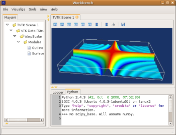

If you want to plot a surface representing a matrix by elevation and colour of its points you have to transform the matrix data in a 3D data that !MayaVi2 can understand. [:Cookbook/MayaVi/mlab:mlab] knows how to do this, but it does not have the nice user interface of !MayaVi2. Here is a script that create a !SurfRegular object using mlab, and then loads it in !MayaVi2. A more detailed version of this script is given in the examples pages [:Cookbook/MayaVi/Examples].
import numpy
def f(x, y):
return numpy.sin(x*y)/(x*y)
x = numpy.arange(-7., 7.05, 0.1)
y = numpy.arange(-5., 5.05, 0.05)
from enthought.tvtk.tools import mlab
s = mlab.SurfRegular(x, y, f)
from enthought.mayavi.sources.vtk_data_source import VTKDataSource
d = VTKDataSource()
d.data = s.data
mayavi.add_source(d)
from enthought.mayavi.filters.warp_scalar import WarpScalar
w = WarpScalar()
mayavi.add_filter(w)
from enthought.mayavi.modules.outline import Outline
from enthought.mayavi.modules.surface import Surface
o = Outline()
s = Surface()
mayavi.add_module(o)
mayavi.add_module(s)
You can run this script by running “mayavi2 -n -x script.py”, loading it through the menu (File -> Open File), and pressing Ctrl+R, or entering “execfile(‘script.py’) in the python shell.
